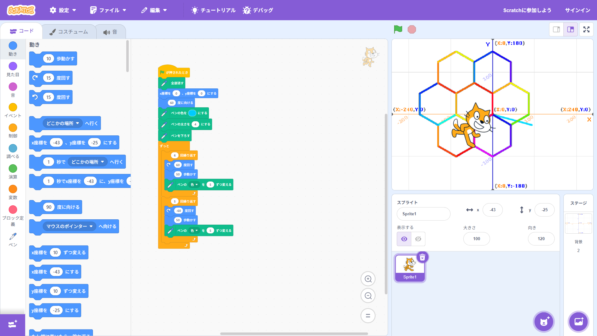
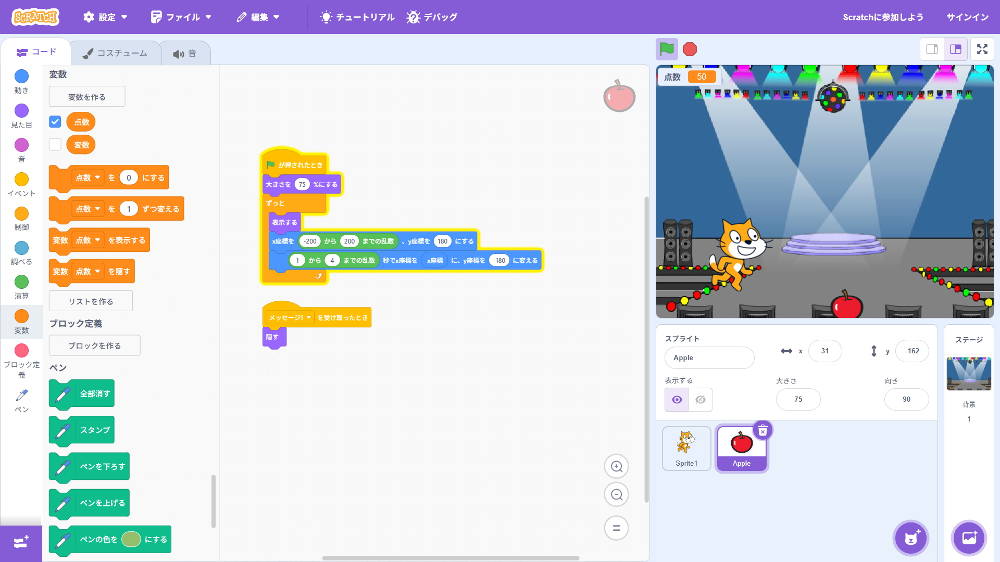

1-1 サイエンスアート

1.内容
学習した内容を説明する文章を
自分で考えて作成する（50文字以上．100文字程度を推奨．※生成AIを使ってはいけない）
scratchによるプログラミングで、座標のセット、移動距離、角度などを指定するブロックを用いて幾何学的な図形を描く方法を学んだ。
まず最初に、ペンの扱い方や、円や線などの比較的単純な図形の描き方を学んだ。
2.感想
学習した内容を実践したときに自分が感じた感想を
自分で考えた文章で作成する（50文字以上．100文字程度を推奨．※生成AIを使ってはいけない）
作ったプログラムがうまく動かなかった時などに、上から見直してどの部分に問題があるのかを考え、問題を解決していくのは面白いと思った。
特に、先生も言っていた通り、幾何学的な図形を描くには数学の知識も必要なので、今まで習ったことと組み合わせてプログラムを組んでいくのが楽しかった。
1-2 ゲーム

1.内容
学習した内容を説明する文章を
自分で考えて作成する（50文字以上．100文字程度を推奨．※生成AIを使ってはいけない）
イベントブロックや条件分岐のブロックなどを使って猫のスプライトを操作し、上から降ってくるリンゴを受け止めるゲームを作った。
また、ゲームとして単調にならないようにリンゴの降ってくる位置を乱数を使ってランダマイズする方法を学んだ。
最終的にはキャッチしたリンゴの数を変数としてカウントして、得点を表示するようにした。
2.感想
学習した内容を実践したときに自分が感じた感想を
自分で考えた文章で作成する（50文字以上．100文字程度を推奨．※生成AIを使ってはいけない）
ゲームのコンセプトとしてはよくあるものだと思ったが、自分で1から作ってみるとゲームの裏側が知れて面白かった。
動作の滑らかさや、降ってくるスプライトを追加したりするとより面白いゲームになると思ったので時間があるときに作ってみようと思う。
ただ、面白いゲームを作るにはプログラミングの知識だけでなく、シナリオやコンセプトの部分も大事になってくると思うので、流行りのゲームの分析などをしてみるのも面白いと思った。